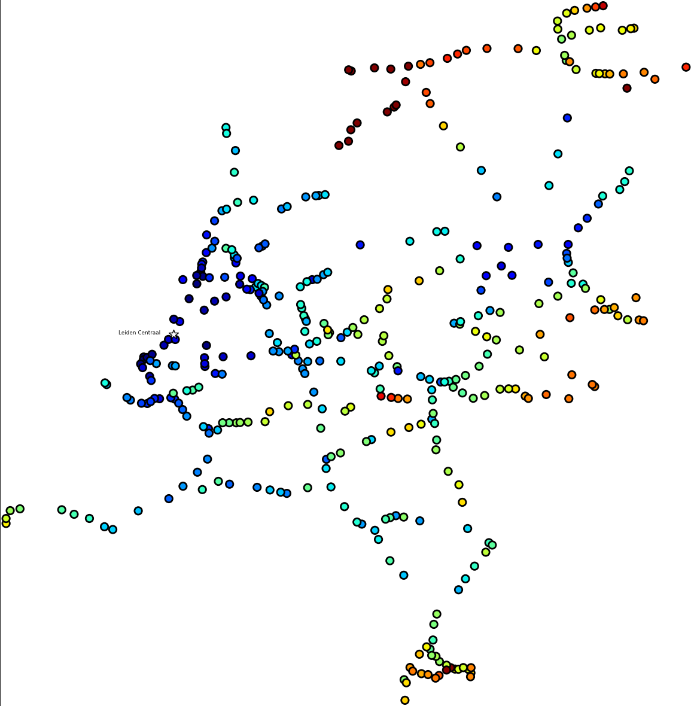
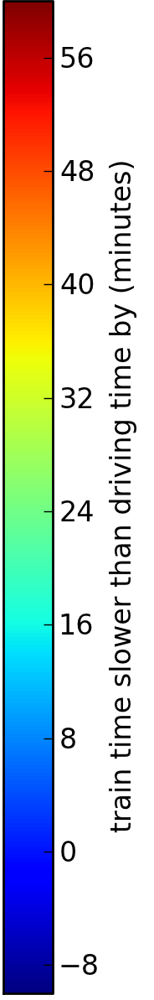

The Dutch railway system
Projection:
|

|  |

Where did this data come from?
|
Travel advice, including the departure and arrival time, can be requested from the
Nederlandse Spoorweg API.
Driving directions can be requested from the Google Maps API. |
How do you make the map projections?
|
The "geographic" projection is just generated using the latitude and longitude of
each train station. The Netherlands is not such a big country, so distortion isn't a
problem!
One annoying thing about the "geographic" projection is that some train stations are practically on top of one another. The "like charges repel" projection is generated by getting the stations to take tiny steps away from each other. The size of the step is proportional to 1/r2, where r is the distance between the stations. The algorithm stops when a minimum distance between each station is achieved. Finally, the routes between stations are smoothed by moving all the stations with only two neighbours closer to the average position of these neighbours. |